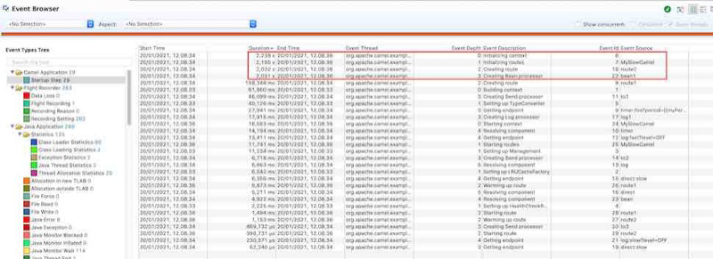

Apache Camel 3.8 has just been released.
This is a non-LTS release which means we will not provide patch releases. The next planned LTS release is 3.10 scheduled for June 2021.
So what’s in this release
This release introduces a set of new features and noticeable improvements that we will cover in this blog post.
Startup and Shutdown Logging
A noticeable difference is we changed the logging noise during startup and shutdown of Camel. The logging better reflect that Camel is a tiny framework that has a low footprint.
The level of details can be customized with the StartupSummaryLevel option. You can go as low as a oneline‘r or even turn it off.
If the change is too radical, then you can set the option to classic so the logging is as it was previously, and has been for over a decade.
Java Flight Recorder
Camel is now capable of capturing “work steps” during startup that can be recorded with Java Flight Recorder. This can be used to better diagnose and find where your Camel applications may be slow to startup, for example due to a misbehaving component or custom user code.
The screenshot below shows a recording that has captured a Camel application that takes about 3 seconds to startup. It’s a very tiny application so we expected it to be faster.
{kind=link}

If we sort the events by duration in the JDK mission control, we can see that there are 4 events that take over 2 seconds, and this helps us pin-point to where the bottleneck is located.
There are more details on this blog post.
Optimized core
We have continued the optimizations and have separated route startup into an initialization and startup phase. This allows Camel to perform route initialization as part of its own initialization. Meaning the start phase has been reduced in needed work, and allows Camel to startup routes faster.
We will continue this effort for Camel 3.9 and 3.10 to allow routes to be enabled for built-time optimization, making Camel faster to startup on frameworks such as Camel Quarkus and Graal VM.
Optimized toD
The dynamic to EIP has been optimized to not rely on an embedded camel-catalog at runtime. Instead we have source code generated Java code that toD is using when optimizing the routing for you. This reduces the footprint as previously toD would have to parse a JSON model to built up an internal model of the endpoint that is used dynamically. Instead the component now carries Java source code that is optimized for toD to use.
All the messaging components have been improved to take advantage of toD.
Reflection free components
We identified about 10 components that are using the @InvokeOnHeader function in their producers. We made those reflection free by source code generated Java code that setup and invokes the appropiate Java methods as direct Java method calls, eliminating reflection all together.
Loading routes from source files
A new RoutesLoader system was implemented which allows to plug in custom route loaders for source files. This is ported from Camel K which is capable of loading routes from Java, XML, Groovy, JavaScript, Kotlin, YAML and other languages.
As a start we ported over the Java loader from Camel K, and improved our own XML loader.
An example is provided that shows loading both Java and XML routes from the file system. The Java routes are compiled at runtime with the same system we used for compiling the CSimple language that was introduced in Camel 3.8.
We plan to port over support for more sources in Camel 3.9 such as JavaScript, Groovy, Kotlin etc. The YAML source is currently being worked on and to make it reflection free, so it can be optimized for modern runtimes such as Quarkus and GraalVM.
Speaking of YAML that brings us to the next feature - Kamelets.
Kamelets
The camel-kamelet component has been stabilized as part of Camel K and is now ready and have been ported over to the main Camel project.
There is a little example here of using Kamelet in vanilla Camel.
We have previously introduced Kamelet, which was created in Camel K. We foresee Kamelets play a bigger role and wanted to bring them out to the main Camel project.
More information about Kamelets to come - stay tuned.
Sensitive values
Camel will mask sensitive information when logging, such as password or access tokens. As there are 300+ components then there are many different options that carry sensitive informaiton.
We now scan all these components for options marked with secret=true and generate an up-to-date Java source code directly in the SensitiveUtils.java which Camel uses for masking. This means that the options being masked is now always current. Before the listed options were hardcoded by hand. At this time of writing there are 61 unique keys for sensitive data.
Spring Boot
We have upgraded to latest Spring Boot 2.4.2 release.
Infinispan
The camel-infinispan component has been split up into a client and embedded component. A reason is that most users would use the client mode, which allows us to offer a dedicated component with a smaller set of dependencies. The embedded component is heavier and has a lot more dependencies to include an Infinispan Server.
Salesforce
The camel-salesforce component has yet again had some bug fixes, improvements and new features implemented, with thanks to our new committer Jeremy.
SJMS
The SJMS component has been overhauled to be more aligned with the Spring based JMS component. It no longer has its own connection pool, but allows you to use any of the 3rd party connection pooling that is standard practice.
RabbitMQ using Spring Client
A noteworthy mention is that we have added a new camel-spring-rabbitmq component that is using Spring RabbitMQ to integrate with RabbitMQ. RabbitMQ is from the same company as Spring so its likely better to use their RabbitMQ client.
New components
This release has a number of new components, data formats and languages:
camel-kamelet- The Kamelet Component provides support for interacting with the Camel Route Template enginecamel-azure-storage-datalake- Camel Azure Datalake Gen2 Componentcamel-paho-mqtt5- Communicate with MQTT message brokers using Eclipse Paho MQTT v5 Clientcamel-huaweicloud-smn- Huawei Cloud component to integrate with SimpleNotification servicescamel-spring-rabbitmq- Send and receive messages from RabbitMQ using Spring RabbitMQ clientcamel-stich- Stitch is a cloud ETL service that integrates various data sources into a central data warehouse through various integrations
Upgrading
Make sure to read the upgrade guide if you are upgrading from a previous Camel version.
Release Notes
You can find more information about this release in the release notes, with a list of JIRA tickets resolved in the release.